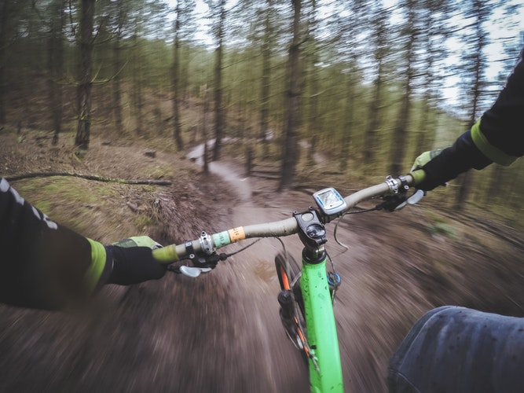
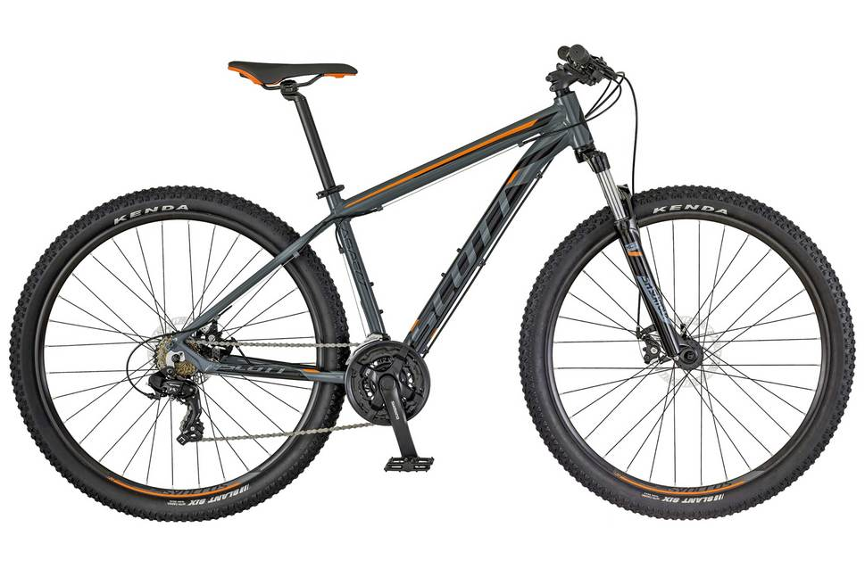

About Mountain Biking

Mountain biking is the sport of riding bicycles off-road, often over rough terrain, using specially designed mountain bikes. Mountain bikes share similarities with other bikes but incorporate features designed to enhance durability and performance in rough terrain. Mountain biking can generally be broken down into multiple categories: cross country, trail riding, all mountain (also referred to as "Enduro"), downhill, freeride and dirt jumping. However, the majority of mountain biking falls into the categories of Trail and Cross Country riding styles.
Types of Mountain Bikes

A mountain bike or mountain bicycle (abbreviated Mtn Bike or MTB[1]) is a bicycle designed for off-road cycling. Mountain bikes share similarities with other bikes, but incorporate features designed to enhance durability and performance in rough terrain. These typically include a front or full suspension, large knobby tires, more durable wheels, more powerful brakes, lower gear ratios for climbing steep grades, and higher gear ratios for going down steep grades.[citation needed] Mountain bikes are typically ridden on mountain trails, singletrack, fire roads, and other unpaved surfaces.
Mountain Bike Racing

Mountain bike racing (shortened MTB or ATB racing) is the competitive cycle sport discipline of mountain biking held on off-road terrain. The Union Cycliste Internationale (UCI) recognised the discipline relatively late in 1990, when it sanctioned the world championships in Durango, Colorado. The first UCI Mountain Bike World Cup series took place in 1988. Its nine-race circuit covered two continents—Europe and North America—and was sponsored by Grundig. Cross-country racing was the only World Cup sport at this time. In 1993, a six-event downhill World Cup was introduced. In 1996, cross-country mountain biking events were added to the Olympic Games.